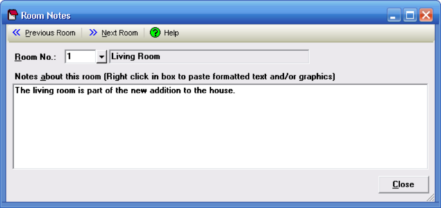

Room Notes Window |
  
|
Room Notes Window |
|
Click the button beside the "Notes" input on the Room Data window to open the Room Notes window, shown below.

Overview
This window lets you enter any notes about the rooms in the project, for your own future reference. The edit box for the notes will accept rich text, which means you can copy and paste formatted text and/or graphics. After copying formatted text from another program to the Windows clipboard, right click in the edit box and select Paste from the popup menu to paste into the box.
Previous Room, Next Room: Changes to the previous or next room in the project. You can define the internal loads for as many rooms as you like before closing this dialog. Shortcut keys: Alt+P, Alt+N.
Help: Opens this help window to this topic.
Room No.: Specifies the number of the current room. Since you can change to different rooms (except when this window is open from Drawing Board), this room number is not necessarily the same as the room being shown on the Room Data window.
Notes about this room: This box lets you type in your notes, or paste formatted text and/or graphics from another program. To paste text and or graphics into the box, right click inside the box and click Paste from the popup menu.
Close: Closes this dialog. All changes you made on the dialog are saved automatically. Shortcut key: Alt+C.